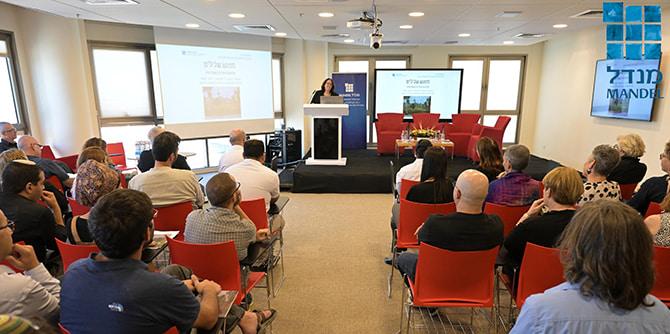
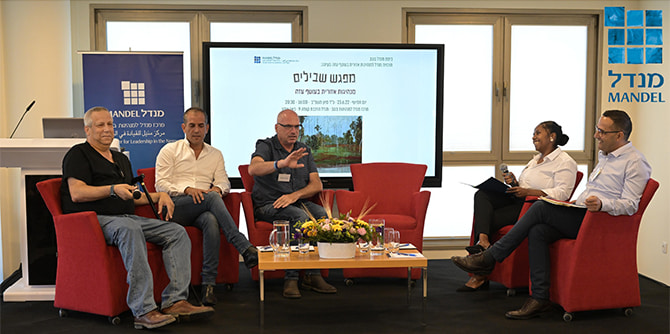

הכנס שקיימו עמיתי התוכנית במרכז מנדל למנהיגות בנגב עסק ב"מפגש שבילים: שיתופי פעולה אזוריים בעוטף עזה". קבוצת המנהיגים כוללת 17 עמיתים מרשימים ממגוון יישובי עוטף עזה ומחמש רשויות: שדרות, מ"א חוף אשקלון, מ"א אשכול, מ"א שדות נגב ומ"א שער הנגב. העמיתים – חלקם מנהלים ונבחרי ציבור ברשויות המקומיות וחלקם בתחומי הביטחון והמשפט, יזמים ואנשי תעשייה – פועלים במגוון תחומי החינוך והקהילה. את התוכנית מובילות
ד"ר רותם ברסלר גונן וד"ר גילי זיוון.
כנס "מפגש שבילים: שיתופי פעולה אזוריים בעוטף עזה" (צילום: דוד פרץ)
בחלקו הראשון של המפגש נערך פאנל בהשתתפות ראש המועצה האזורית אשכול גדי ירקוני; ראש המועצה האזורית שער הנגב אופיר ליבשטיין (בוגר תוכנית מנדל למנהיגות אזורית בבאר שבע, מחזור ב'); ראש המועצה האזורית חוף אשקלון איתמר רביבו, ומנכ"ל אשכול רשויות נגב מערבי אורי פינטו. את הפאנל הנחו עמיתי התוכנית עו"ד עמיחי חביביאן ועו"ס חנה יצחקי שפטייב.
הדוברים הציגו את תפיסת עולמם בנוגע לשיתופי פעולה אזוריים. גדי ירקוני טען שיש ליצור שיתופי פעולה משמעותיים משנים מציאות בעוטף עזה. אורי פינטו טען שתהליכי שיתופי פעולה הם אבולוציוניים, במובן זה שצריך להתחיל ביוזמות קטנות ולגדול מתוך אמון לשיתופי פעולה אזוריים משמעותיים. אופיר ליבשטיין תיאר היסטוריה של שיתופי פעולה משמעותיים, דוגמת פסטיבל דרום אדום ומיזמי מצוינות בחינוך. לדבריו, יש להמשיך ולחזק שיתופי פעולה כאלה. איתמר רביבו הזכיר שחלק מהעוטף כולל רצועות חוף מהיפות בארץ, המזמינות שיתופי פעולה לפיתוח תיירות אזורי. כל הנוכחים הסכימו שמוסדות המדינה צריכים לתמוך בפיתוח שיתופי פעולה אזוריים.
בחלקו השני של המפגש התכנסו האורחים בחמישה חדרים ובהם הציגו העמיתים את היוזמות והפרויקטים שלהם לפיתוח הנגב המערבי: 15 יוזמות חברתיות, סביבתיות, קהילתיות, עבור צעירים, נוער וילדים בסיכון, עבור אוכלוסיות מיעוט לא מיוצגות, בהקשרים ביטחוניים, כלכליים ותיירותיים ומתוך הקשרים של תרבות ואמנות. המשותף ליוזמות שכולן פותחו מתוך היכרות, מקצועיות ואהבה למקום ולמרחב הנגב המערבי והן תוצר של מסע הלמידה בתוכנית: תהליך של למידת עומק, חקר ושיח בוחן וערכי שהעמיתים ערכו לאורך השנתיים האחרונות. היוזמות נוצרו בפרספקטיבה אזורית המדגישה את הכוח שבמגוון האנושי והחברתי במרחב עוטף עזה, ובמימוש הפוטנציאל שביצירת חיבורים חוצי גבולות מוניציפאליים וחוצי קהילות. פירוט על היוזמות והפרויקטים אפשר למצוא בחוברת "מפגש שבילים", שיצאה לאור ביוני 2022.
חברי הפאנל עם העמיתים המנחים (צילום: דוד פרץ )
{kind=link}
{kind=link}